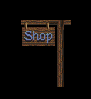

INDEX OF SHOPS
[SHOP HOME]
Armengar:
The Forge
Buck Rausch's House
(South of Sloop)
Caern:
Oeirdu & Company
Caldara:
Split Tree Goods
Cavall Keep:
Sign of the Sword
Children of the Green Heart
(South of Armengar)
Dabeh's Fanciful Trinkets
(Southeast of Cavall Keep)
Darkmoor:
The Mercantile
Delcinad's Shop
(North of Caldara)
Dencamp:
The Grumbling Magician
Dimwood:
Fife & Laurel
Eldpoint:
Guds
Et Cetera Goods
(North of Cavall Keep)
Hawk's Hollow:
The Woolen Man
Herbal Farm
(South of Cavall Keep)
Highcastle:
The Battleworks
Joseph the Animal's
(Near Temple of Killian)
Kenting Rush:
Jewels, Keys, Rings
Krondor:
Sign of the Eagle
Krondor:
Touchstone Gems
LaMut:
Fletcher's Post
Loriel:
Kingdom Goods
Malac's Cross:
The Armory
Morgan Hurley's
Nia's Goods
(Chapter 1)
Nia's Goods
(Chapter 2+)
Northwarden:
The Iron Monger
Prank's Stone:
Roots & Herbs
(Version 1.01)
Prank's Stone:
Roots & Herbs
(Version 1.02)
Questor's View:
Pierce Perry's Weapons
Raglam:
Cloth Yard Shot
Romney:
Port Exchange
Romney:
Port Exchange
(Guild War)
Rygate & Supply
(Northwest of Questor's View)
Sar-Sargoth:
Scavenger's Meet
Sarth:
Stardock Annex
Scavenger's Meet
Silden:
Hakha's Cajunlo
Sloop:
Gallowlees' Jewels
Tanneurs:
Hamil's Pawn
Tyr-Sog:
Three Hillmen Pawn
Wolfram:
Alchemist's Shop
Wolfram:
The Arms of Dala
Wyke:
Wyke Armors
Yabon:
The Crossroads
Zun:
Kege's Herbs


 INDEX OF SHOPS[SHOP HOME]
INDEX OF SHOPS[SHOP HOME]